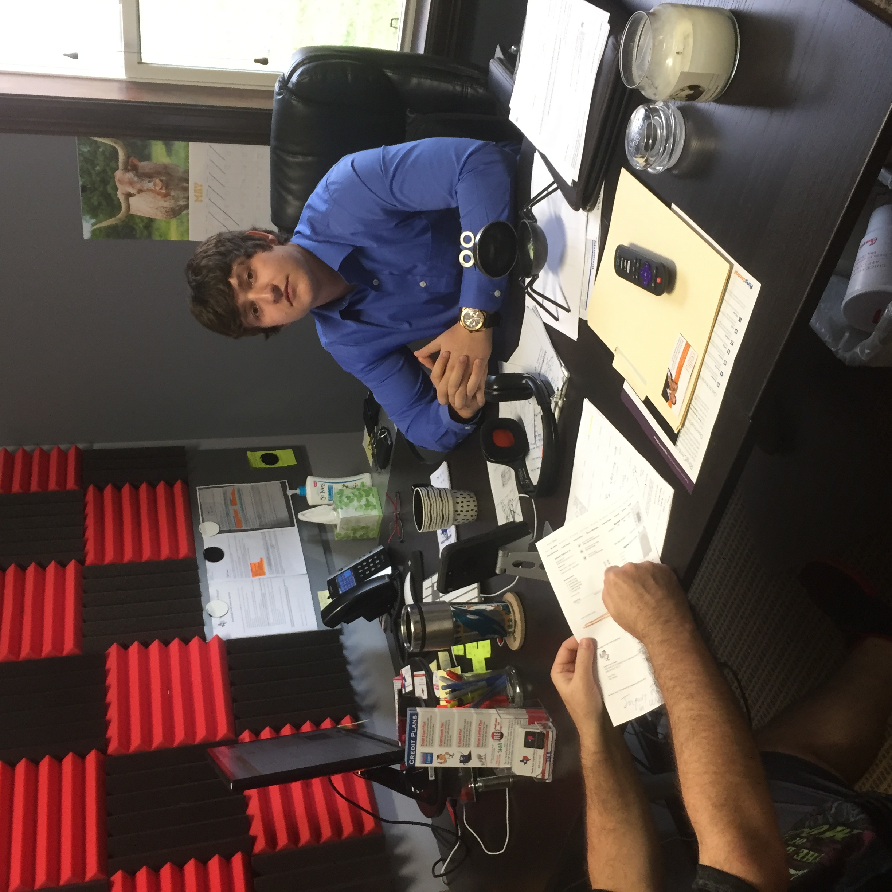

Billy Crouch
Coder in the making.

Hello! My name is Billy i am 26 and i cuurently reside in sunny Conroe, Texas. I currently work as a master window tinter and have been working for my fathers business since i was 12 years old. Window tinting can really do a number on ones body and for such a young age i'm already feeling it! That is why i have been seeking a new career path that doesnt involve wear and tear on my body, becoming a full-stack engineer is the path i decided i want to go down and i look forward to constantly learning about this very interesting subject and line of work.